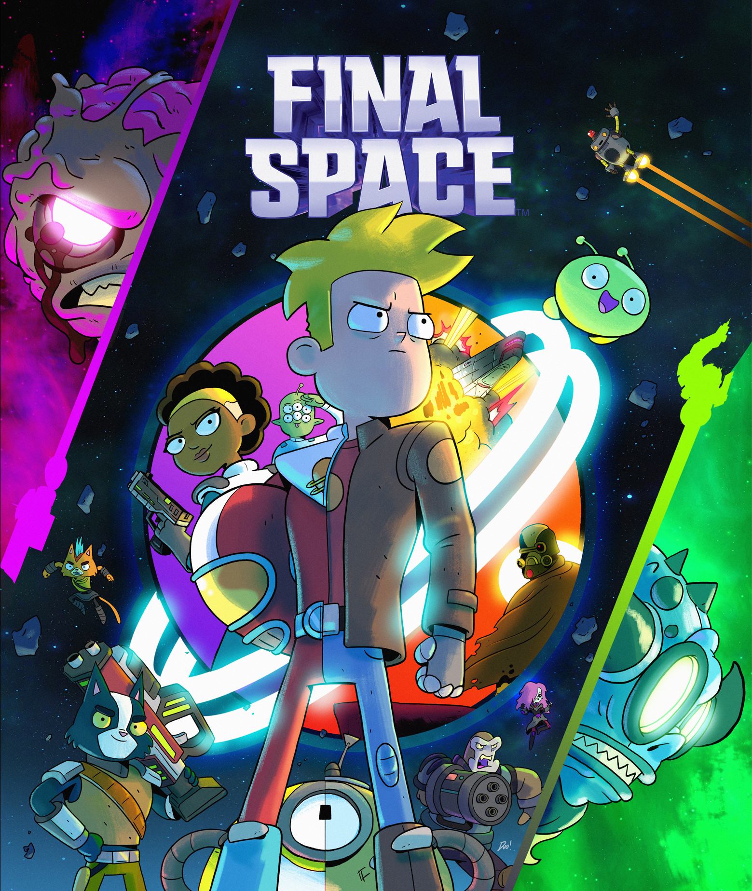
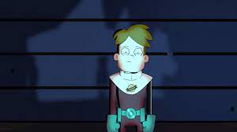

<!DOCTYPE html> 
<html lang="pt-br">
<head>
    <meta charset="UTF-8">
    <meta name="viewport" content="width=device-width, initial-scale=1.0">
    <title>Final Space</title>
    <link rel="stylesheet" href="css/meuestilo.css">
</html>
    <body>
        <header>
            <div class="logo">
                
                </div>
        <menu>
        <nav id=menu>
            <ul>
                <li><a href="#">Enredo</a></li>
                <li><a href="#">Personagens</a></li>
                <li><a href="#">Sinópses</a></li>
                <li><a href="#">Antagonistas</a></li>>
            </menu>
            </ul>
        </nav>
    </header>
    <main>
        <h1 class="titúlos">Sinópse</h1>
        <p>Gary Goodspeed é um astronauta enérgico, mas estúpido, que, no meio do trabalho dos últimos dias de sua sentença de cinco anos a bordo da espaçonave prisão Galaxy One , encontra um misterioso alienígena destruidor de planetas. Ele faz amizade com o alienígena, chamando-o de Mooncake, e então descobre que eles estão sendo perseguidos pelo sinistro e telecinético Senhor Comandante. Juntos, Gary e Mooncake embarcam em uma missão para salvar o universo, com a ajuda da inteligência artificial HUE e de uma tripulação crescente de companheiros de bordo, cada um com seus próprios problemas pessoais, tudo isso enquanto tentam desvendar os segredos que cercam o Final Space, um reino bizarro onde o universo acaba.</p>
        <p>A ideia do show surgiu em meados de 2010. Olan Rogers carregou o primeiro episódio de uma série animada da web planejada em dez partes intitulada Gary Space em seu canal pessoal no Facebook. O projeto entrou em um hiato após três episódios, e Rogers finalmente explicou no Facebook que tanto ele quanto o artista da série, Dan Brown, estavam tendendo a separar projetos na época, mas estavam em negociações para continuar. Em 30 de abril de 2013, Rogers confirmou que estava reiniciando e produzindo uma temporada de episódios de Gary Space para lançar imediatamente. Mais de dois anos depois, Rogers revelou que um novo curta para a reinicialização de Gary Space foi planejado para ser apresentado ao Cartoon Network , além de estrear o episódio no Buffer Festival se nada saísse do campo.</p>

        <figure>
            
        </figure>

        <h1>Personagens Principais</h1>

        <h2>Gary Goodspeed</h2>
        <p>Gary Goodspeed é filho de John Goodspeed , um capitão da Guarda do Infinito que morreu em uma missão para fechar uma brecha no Espaço Final quando Gary era criança. Pouco depois da morte de seu pai, Gary foi abandonado por sua mãe, Sheryl Goodspeed , e forçado a uma vida de crime. Anos mais tarde, um adulto emocionalmente atrofiado Gary se passou por um soldado da Guarda do Infinito para impressionar o oficial Quinn Ergon , mas destruiu acidentalmente 92 naves espaciais (além de um restaurante mexicano), e foi condenado a uma pena de prisão de 5 anos no Galaxy One , onde, em seu No último ano de prisão, conheceria e se tornaria amigo de um alienígena destruidor de planetas chamado Mooncake , e do caçador de recompensas ventrexiano Avocato , que posteriormente o colocaria em uma jornada de mudança de vida para desvendar o mistério do Espaço Final. Servindo como líder do Team Squad , ele é o principal protagonista de Final Space </p>

        <h2 style="color: darkblue;">Avocato</h2>
        <p>Quando visto pela primeira vez, Avocato, junto com vários outros caçadores de recompensas, rastreou Mooncake até o Galaxy One . Os outros caçadores de recompensas foram eliminados quando Gary Goodspeed ordenou que o HUE dobrasse o navio com luz. Apenas Avocato ficou para trás e foi capturado, após o que Gary o forçou a jogar cartas com ele.
            Embora inicialmente hostis a Gary, os dois se uniram durante uma missão em Tera Con Prime para rastrear o caçador de recompensas Terk . Com Terk, Avocato soube onde seu filho estava mantido em cativeiro, mas acabou sendo uma armadilha, e ele foi levado perante o Senhor Comandante. Ele conseguiu escapar graças a Gary, embora Gary tenha perdido um braço no processo, e os dois voltaram para o Galaxy One. Assim que Gary soube do filho de Avocato, ele prometeu ajudar a libertá-lo.
            Avocato juntou-se assim voluntariamente ao Team Squad, que ganhou um membro adicional em Quinn Ergon . Ele ajudou ela e Gary a eliminar os soldados corruptos da Guarda do Infinito que estavam abrindo uma brecha no Espaço Final do Posto Avançado da Guarda do Infinito - 0439.</p>
        
            <h2 style="color: greenyellow;">Mooncake</h2>
            <p>Mooncake é uma anomalia espacial destruidora de planetas que foi criada pela energia residual da explosão de uma bomba de antimatéria que fechou um portal para o Espaço Final . Pouco depois, ele foi descoberto perto de uma supernova a bordo do Scarlet Lance , de onde logo fugiu e conheceu Gary Goodspeed , um prisioneiro mantido sozinho no Galaxy One , que deu o nome de Mooncake em homenagem a uma lagarta que ele teve quando criança. Com os dois rapidamente se tornando aliados próximos, Mooncake se junta a Gary (e ao Team Squad em breve expansão ) para salvar o universo dos Titãs , do Senhor Comandante e de Invictus , todos os quais procuram usar Mooncake para ganhar ainda mais poder e estabelecer desperdício para o universo.</p>
        <h2></h2>
    </main>
    <footer>
    </footer>
    </body>
</head>
</html>